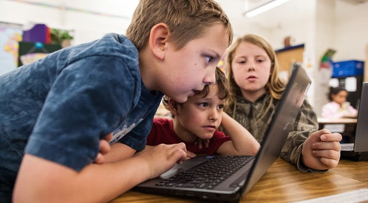

برای آموزش کامپیوتر به کودکان، کدام مسیر مناسب است؟ چه کتابی مناسب آموزش کامپیوتر به کودکان است؟ کدام نرم افزار و یا زبان برنامه برای کودکان و نوجوانان پیشنهاد میشود؟
کشورهای جهان اول و پیشرو در آموزش چه سرفصلهایی را برای آموزش کامپیوتر به کودکان را پیشنهاد میکنند؟
قبل از ادامه باید روشن کنم که منظور ما از کودک چیست. در آموزشهای رسمی کامپیوتر مانند google cs first گروه سنی مخاطبین را بین 9 تا 14 سال میدانند و تجربه شخصی من نیز تایید کننده همین محدوده سنی است. در واقع حداقل سن را برای دانش آموزان چهارم دبستان پیشنهاد میکنم. در ضمن آنکه میتوانید نگاهی به نمودار هرم سنی استفاده کنندهها از اسکرچ که توسط تیم اسکرچ دانشگاه MIT تهیه شده است نگاهی بیندازید. به وضوح در آن این محدوده سنی تایید میشود و پیشنهاد نمیکنم که به دانش آموزان کوچکتر (مانند پیش دبستانی و ابتدایی نوبت اول) این مهارت تدریس شود.
آموزش کامپیوتر به کودکان - بررسی وضعیت موجود در اینترنت
با نگاهی به وب سایتها، جستجو در گوگل و کتابهایی که برای کودکان در حوزه آموزش کامیپوتر وجود دارد میتوانید پیشنهادهای زیر را بیابید:
1) آموزش مفاهیم مقدماتی ویندوز، کار با ماشین حساب، ساخت فولدر و فایل
2) آموزش نرم افزارهای سادهای مانند Paint برای کودکان
3) آموزش تایپ، پاورپوینت و آفیس برای کودکان
مهارت آفیس مانند ورد و یا پاورپوینت میتواند برای یک دانشجو و یا کارشناس سازمانها مفید و کاربردی باشد و باید تاکید شود که این آموزشها خالی از جذابیت هستند و به سختی میتوان خلاقیت را در آنها گنجاند. بدیهی است که مفاهیم پایه ویندوز لازم هستند اما نه به عنوان هدف اصلی برای آموزش.
متاسفانه در کتابهای درسی و رسمی آموزش و پرورش مانند «کار و فن آوری» خبری از روشهای نوین آموزش کامپیوتر نیست و تقریبا به همان سبک 30 سال پیش آموزشها و مطالب ارائه شده است. در دو مقاله «چرا باید اسکرچ در مدارس تدریس شود» و مقاله «سرفصل پیشنهادی آموزش کامپیوتر در مدارس» در اینباره به صورت مفصل تری مطالبی را نوشتهام.
آموزش کامپیوتر به کودکان - کتاب کار و فن آوری - پایه ششم دبستان
شروع آموزش به دانش آموزان در ایران از ششم دبستان و با کتاب «کار و فن آوری» شروع میشود. متاسفانه نقدهای فراوانی بر آن کتاب وارد است که برخی از آنها را در مقاله «سرفصل پیشنهادی آموزش کامپیوتر در مدارس» آوردهام. اما مشکل اصلی این کتاب بسیار فراتر از نقد است زیرا کتابهای کار و فن آوری آموزش و پرورش مسیری «کاملا اشتباه» را در پیش گرفته است و نه تنها به دانش آموزان «علم کامپیوتر» را یاد نمیدهند. بلکه آنچه «علم کامپیوتر نمیتوان نامید» را ارائه میکنند.
علم کامپیوتر یا Computer Science که به اختصار CS گفته میشود، چیزی است که تعریف رسمی دارد و مبنای تمامی آموزشهای رسمی و جدی در دنیا است. اجازه دهید نگاهی به تعریف شرکت گوگل که در دوره CS First ارائه کرده است بیندازیم.

در این اسلاید به صراحت آمده است که موارد زیر را «علم کامپیوتر» نمیتوان نامید:
- یادگیری تایپ
- استفاده از نرم افزار Word برای تهیه فایل متنی
- تعمیر کامپیوتر
- انجام بازیهای کامپیوتری
متاسفانه در کتاب «کار و فن آوری» یک فصل بر روی کار با Word و یک فصل بر تایپ کردن تاکید فروان شده است و سپس مطالبی بسیار پیش پا افتاده مانند الگوریتم/فلوچارت «رفتن به مهمانی» و یا «غذا دادن به کودک» به دانش آموزان به عنوان «تفکر حل مسئله» آموزش داده میشود.
فاجعه بار است که مولفین «نسخه جدیدی از قضیه حمار» را در آن کتاب آوردهاند: (قضیه حمار یعنی خـَــر هم میتواند کوتاه ترین مسیر را تشخیص دهد.)

البته مسائل بسیار پیچیدهتری مانند «آب دادن به گلدان» و «شستن ماشین» و «خرید نان» هم جزء این موارد است.
ناگفته نماند که یکی از این مثالها میتوانست در حد نیم صفحه بیان شود و سپس مسئلههای واقعی تری مانند «فروشنده دوره گرد» و یا «مرتب کردن» و یا «جستجو در کتاب دفترچه تلفن» آموزش داده شود. در انتهای همین مقاله، نمونهای از دوره CS50 دانشگاه هاروارد که در آن مرتب سازی حبابی انجام میشود و یکی از مسائل کلاسیک و نسبتا ساده برای تفکر «حل مسئله» است را میتوانید مشاهده کنید و میبینید که به راحتی و حتی بدون کامپیوتر کاملا میتوان این مسئلهها را آموزش داد. (ویدئوی انتهای مقاله را مشاهده کنید.)
علاوه بر این به راحتی قابل تشخیص است که سادگی محتوا و مسئلههای این کتاب با پیچیدگی مسئلههای کتابهای ریاضی همان مقطع هیچ تناسبی ندارد.
آموزش کامپیوتر برای کودکان در کشورهای توسعه یافته

خوشبختانه در این حوزه شرکت گوگل در این حوزه به صورت بسیار جدی دورههایی را به نام CS first ساخته است که کاملا رایگان است استاندارهایی ISTE و CSTA را داراست. در این دوره اساس کار بر روی یادگیری «زبان برنامه نویسی اسکرچ» است.
ناگفته نماند که یکی از مخاطب اصلی این دورهها و سامانه آموزش آن معلمین هستند که بر اساس این سرفصلها بتوانند بدون دانش قبلی و برای اولین بار «علوم کامپیوتر» را برای کودکان آموزش دهند.
لینک سایت اصلی آن از قرار زیر است و محتواهای آموزشی آن بسیار مفصل و به صورت ویدئو، تمرین و نمونه سوال و نمونههای حل شده است و توضیحات کامل آن را میتوانید در همین سایت مشاهده کنید:
همچنین سرفصلهای دوره Creative Computing دانشگاه هاروارد نیز بر اساس زبان برنامه نویسی اسکرچ تهیه شده است:
creativecomputing.gse.harvard.edu/guide
نرم افزار آموزش کامپیوتر به کودکان
در دوره گوگل، سرفصل دانشگاه هاروارد و همچنین سرفصلهای کمبریج از زبان برنامه نویسی اسکرچ که در دانشگاه MIT ساخته شده است، استفاده میشود. در اسکرچ کودکان قطعاتهایی که هر یک دستوری است را به یکدیگر میچسبانند و برنامه ای را میسازند.
تنوع عناصر موجود در زبان برنامه نویسی اسکرچ به گونهای است که بچهها میتوانند نقاشی بکشند، داستانی بگویند، انیمیشن بسازند و بازی درست کنند.
خوشبختانه امروزه در ایران در بسیاری از آموزشگاههای کامپیوتر کودکان و برخی از مدارس اسکرچ تدریس میشود و همچنین ما برای شما منابع آموزشی مختلف رایگان اسکرچ را که در همین سایت میتوانید دانلود کنید را فراهم آوردهایم.
برای آشنایی بیشتر با اسکرچ، مقاله «اسکرچ چیست» را ببیند و سپس مقاله «دانلود و نصب اسکرچ 3» را مطالعه کنید.
پدر و مادرها برای آموزش کامپیوتر به کودکانشان از کجا شروع کنند؟
کلاسهای حضوری همواره حال و هوای جذاب و کیفیت بسیار بالایی را دارند و بدیهی است که در صورتی وجود کلاس، آموزشگاه و معلم با تجربه، ثبت در کلاس از اولیت اول برخوردار است.
اما برای آن دسته از والدینی که مایلند به صورت شخصی اقدام به آموزش کامپیوتر به فرزندانشان کنند، مسیر زیر پیشنهاد میشود:
قدم یکم) کمی خودتان اطلاعات کسب کنید:
1) در مورد نرم افزار اسکرچ اطلاعاتی اولیه را کسب کنید. برای اینکار 1 ساعت وقت بگذارید. از مقاله «اسکرچ چیست» شروع کنید و سپس مقاله «دانلود و نصب اسکرچ 3» را مطالعه کنید. در سایت اسکرچ 40 میلیون پروژه وجود دارد، نگاهی به آنها بیندازید.
2) حداقل 1 ساعت چند ویدئوی آموزش اسکرچ را مشاهده کنید. (مهم نیست که همه چیز را دقیقا متوجه شوید، کافی است که با حال و هوای نرم افزار آشنا شوید.)
قدم دوم) همراه با فرزند خود باهم انجام دهید:
3) یکی از کارتهای ساده اسکرچ مانند «دنیایی خیالی در اسکرچ» را دانلود کنید و آن را خودتان حداقل یکبار کامل انجام دهید. احتمالا 30 دقیقه وقت بیشتر از شما نخواهد گرفت.
4) با فرزندتان وقت بگذارید و آن کارت را با حوصله انجام دهید. در این لحظه از شما دهها سوال خواهد پرسید والبته تقریبا پاسخ هیچکدامشان را نمیدانید.
قدم سوم) او را تشویق و حمایت کنید:
5) در اینجا میتوانید آموزش تکمیلی را با «کارتهای اسکرچ» و یا «ویدئوهای آموزشی اسکرچ» و یا «کتاب سلام اسکرچ» شروع کنید. بهتر است یکی از اینها را که خودتان میتوانید راحتتر متوجه شوید را انتخاب کنید و اولین قدمها را با فرزندتان طی کنید.
6) او را تشویق کنید که ادامه آموزشها را به تنهایی و یا با دوستش ادامه دهد، اما حتما به صورت مرتب (روزانه) از او بپرسید که چه چیزهایی یاد گرفته است و اجازه دهید که پروژههایش را به شما نشان دهد.
7) تشویقش و یا کمکش کنید تا برخی از تکالیف/داستانها و ... مدرسه را با اسکرچ انجام دهد و حتی المقدور به دست معلمش برسانید.
قدم های بعدی:
8) میتوانید کم کم مفاهیم فایل / فولدر و ذخیره و ... را به او یاد دهید.
9) او را در سایت اسکرچ ثبت نام کنید و تشویقش کنید که برخی از پروژه ها را بازترکیب کند.
10) برای او سخت افزارهای قابل برنامه نویسی با اسکرچ مانند microbit را از خارج از ایران خریداری کنید.
توجه:
* اجازه دهید که فرزندتان کنجکاوی کند، از این شاخه به آن شاخه بپرد و زیاد او را مقید نکنید. یکی از اهداف آموزشی اسکرچ، تقویت کنجکاوی و دوستی با تکنولوژی است. او را از اشتباه کردن نترسانید.
* کارتهای اسکرچ را اجازه دهید خودش انتخاب کند. ممکن است بخواهد که آخرین و سخت کارت را در ابتدا انجام دهد.
* هر از گاهی از او بخواهید که چیزی که پیش آمده است را در اسکرچ پیاده سازی کند. مثلا یکی از تکالیف ریاضی را با اسکرچ انجام دهد و یا اینکه یکی از داستانهای کتاب فارسی را در اسکرچ بسازد.
* حداکثر یادگیری هنگامی اتفاق میافتد که چیزی را به کسی یاد دهیم. بنابراین شاید بعد از مدتی بهتر باشد که او را تشویق کنید که به یکی از دوستانش کمی اسکرچ یاد دهد.
* یکی از روشهای یادگیری اسکرچ «بازترکیب» پروژههای ساخته شده در سایت اسکرچ است. برنامه کلیه پروژهها باز و قابل مشاهده و قابل تغییر است پس او را با سایت اسکرچ آشنا کنید تا بتواند با میلیونها کودک در دنیا ارتباط برقرار کند.
والدین گرامی از مدیر و معلمین مدرسه فرزندتان بخواهید که برای همه دانشآموزان مدرسه فرصت آشنایی و یا آموختن «علم کامپیوتر» را فراهم کنند و آموزش زبان برنامه نویسی «اسکرچ» جایگزین سرفصلهای کامپیوتری « کتاب کار و فن آوری» نمایند. همچنین معلمین محترم میتوانند به سادگی تدریس اسکرچ را آغاز نمایند و از خود دانش آموزان کمک بگیرند.